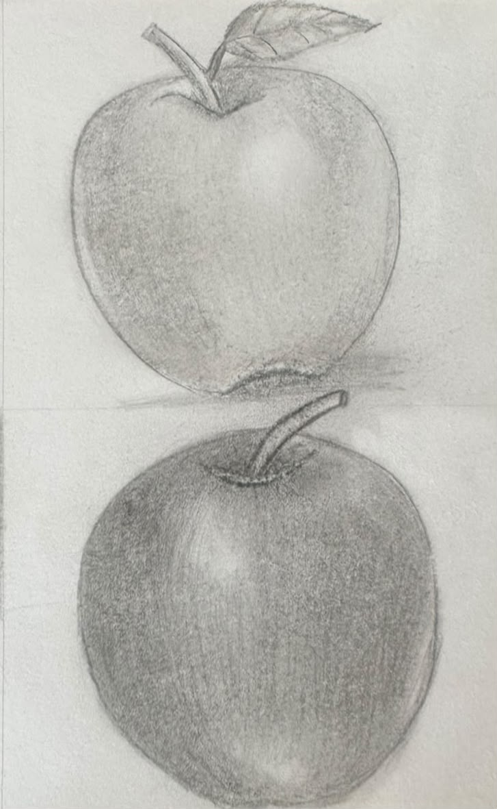

Licencia Creative Commons Zero (CC0).

Licencia Creative Commons Zero (CC0).
La técnica del lápiz es uno de los métodos artísticos más fundamentales y accesibles en el dibujo y las artes plásticas. Consiste en plasmar trazos, sombras y volúmenes sobre una superficie (generalmente papel) utilizando diferentes tipos de lápices de grafito o de colores, aprovechando la presión y la inclinación para lograr diversas gradaciones tonales y texturas.
Principales características
- Versatilidad tonal: Permite crear desde líneas finas y definidas hasta degradados suaves y difuminados, abarcando una amplia gama de grises (o colores).
- Facilidad de corrección: A diferencia de la pintura o la tinta, el grafito se puede borrar con relativa facilidad (usando una goma moldeable o de nata), lo que facilita la experimentación y el ajuste de errores.
- Control del valor y la luz: Mediante la técnica del achurado (líneas entrecruzadas), el claroscuro o el difuminado, se logra simular el volumen, la profundidad y las texturas de los objetos.
- Portabilidad: Es una técnica limpia y rápida que requiere muy pocos elementos, por lo que es ideal para bocetos rápidos (sketches) y obras detalladas de estudio.
Materiales Necesarios
- Lápices de grafito (Graduaciones H y B):
- Lápices H (Hard / Duros): Tienen una mina más dura y dejan trazos claros y finos. Son ideales para trazos iniciales y detalles precisos (ej. 2H, 4H).
- Lápices B (Black / Blandos): Tienen una mina más blanda que deja un trazo más oscuro y denso. Son perfectos para sombras, texturas profundas y claroscuros (ej. 2B, 4B, 6B, 8B).
- Lápiz HB o F: Funciona como un punto de término medio para bocetos generales.
- Papel para dibujo: Se recomienda papel con cierto gramaje (de 120 g/m² en adelante) para soportar capas y borrados sin romperse.
- Gomas de borrar: Goma moldeable (o miga de pan): Es indispensable porque absorbe el grafito sin dañar el papel y permite aclarar sombras de forma sutil.
- Herramientas de difuminado (opcionales):
- Difumino: Un cilindro de papel apretado que sirve para suavizar los trazos y unificar los grises.
- También se pueden usar bastoncillos de algodón o papel higiénico (aunque los artistas profesionales suelen preferir el control mediante el trazo de líneas).
- Sacapuntas o cúter: Para mantener la punta afilada y lograr distintos grosores de línea. (Muchos artistas prefieren usar un cúter y una lija para afilar la mina dejando una mayor longitud expuesta).
Para comprender más sobre el tema observa el siguiente video:
Para comprender más sobre el tema analiza la siguiente información:

¡Es tu turno, realiza la práctica de acuerdo a las indicaciones de tu maestro!